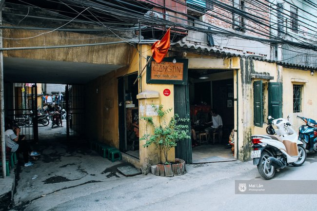
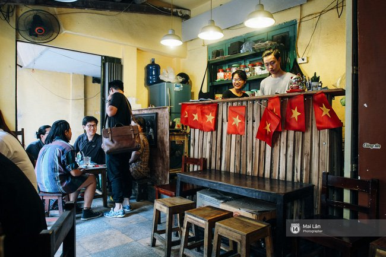
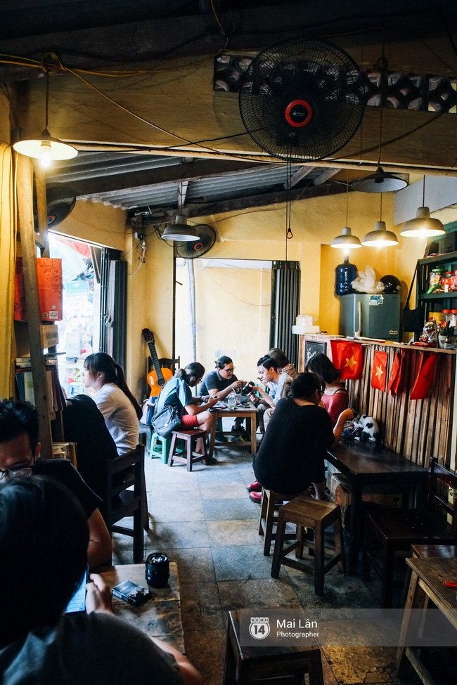

Tôi đã từng rất ghen tị với Sài Gòn, nhất là sau khi đọc xong bài viết này: “Những cửa tiệm “bán đồ xinh xinh dễ thương” giữa lòng Sài Gòn tấp nập. Lý do thì thật trẻ con, là vì tôi nghĩ tại sao tất cả mọi thứ đáng yêu trên đời này cứ dồn hết vào Sài Gòn không vậy? Thế còn Hà Nội? Tự ra điều ấm ức với mình vậy thôi, chứ tôi cũng chẳng để bụng nhiều. Gì thì gì, những điều dễ thương của Hà Nội vẫn luôn nằm ở đâu đó, chỉ là… chưa ai chỉ cho chúng ta chỗ thôi.
Riêng tôi thì đã tự tìm ra Căng tin 109 trong lúc buồn buồn chán chán ngồi lang thang các trang review đồ ăn, thức uống ở Hà Nội. Đây chưa chắc đã là một quán cafe đẹp với nhiều người, nhưng về độ dễ thương thì khỏi bàn đi.
Quán gì mà bé tẹo nằm ngay dưới chân khu tập thể, nói như bạn tôi thì vào trong, đi 5 bước là đã hết veo quán. Sẽ không có một không gian thực sự riêng tư cho những ai cần nó nếu đến Căng tin 109. Nhưng với những ai có năng lực chỉ chú tâm đến chuyện của mình và mặc kệ tiếng nói chuyện của mọi người, mùi thơm phức của chiếc bánh mỳ nem khoai béo ngậy hay hộp mỳ tôm chanh bò khô từ bàn bên thì chuyện này thực sự không quan trọng. Quán bé, nhưng hay ho, lại còn như được sống lại cái thời tờ 200 đồng, 500 đồng đã mua được hạnh phúc mà không phải đâu cũng có – một chỗ ngồi ở nơi như thế là quá ổn rồi.
Biển hiệu là cái bảng gỗ, viết to và rõ ràng tên Căng tin một – linh – chín. Nền tường vàng đặc trưng của những khu tập thể cũ, không ít chỗ đám rêu xanh đã thi nhau mọc lên. Bên trong quán kê chẳng biết có được chục cái bàn hay không, nhưng quán bé thì bé thật song vẫn có 2 chiếc cửa sổ, đủ để thoáng và chụp hình thật… deep.
